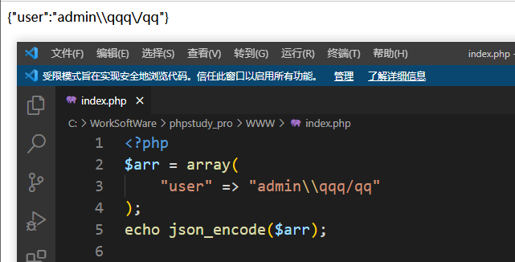

漏洞分析: DedeCMS_5.7.97_前台RCE_漏洞挖掘与分析
本文首发于奇安信攻防社区：https://forum.butian.net/share/1940
本文仅用于技术讨论与研究，文中的实现方法切勿应用在任何违法场景。如因涉嫌违法造成的一切不良影响，本文作者概不负责。
0x00 漏洞描述
本文分为两部分，第一部分是 CVE-2022-35516 的漏洞复现，影响到 5.7.96 ，第二部分是该漏洞的一个绕过，影响 5.7.97 ，已提交 CNVD ，dedecms 已在 5.7.98 修补。
大概在 5.7.93 版本左右，dedecms 新加了一个功能，用来记录用户登录次数，直接写入 php 文件，可以造成 RCE。就是此处的 CVE-2022-35516

0x01 漏洞影响
dedecms 5.7.93 < x < 5.7.97
0x02 漏洞分析
环境获取：
https://www.dedecms.com/download
CVE-2022-35516
在登陆界面，不会验证用户名真假，直接写入文件
代码有点长，不直接贴了，讲一下大概逻辑
- 如果存在
data/login.data.php，那么会包含该文件，获取里面的内容赋值给$arr_login，这里是取出之前存储的登录次数等内容 - 比较验证码，不正确就退出
- 进行
checkuser，验证用户名密码是否正确，因为我们要实现前台RCE，因此不考虑用户名密码正确的情况 - 用户名错误时，会将
$arr_login在json_encode后写入文件，包括内容有用户名，次数，时间，其中我们能控制的就是用户名
这里贴上关键代码

这里直接将 php 代码写入了 data/login.data.php ，但是 dedecms 会对进入程序的所有变量进行一次过滤，比如这里的 $userid，实际上就是 post 进来后注册成全局变量然后进行过滤的，具体代码位于 include/common.inc.php

进入的 userid 会经过 _RunMagicQuotes 过滤，看代码

存在 addslashes 转义，因此我们传入的 payload 经过这里后是存在如下变化的
1 | |
按道理说这里是无法闭合上之前的单引号，dedecms 的开发者估计也是这么想的，因此导致了漏洞的产生
因为忽略了 json_encode 的转义，json_encode 会转义 /\ 等字符，如下

因此，经过 json_encode 后的字符串会这样变化
1 | |
此处将转义符号给转义回去了，因此可以闭合之前的单引号，从而写入一句话木马
修补绕过
在 5.7.97 中， login.php 的判断用户名密码返回值时，修改成了如下代码

原本是没有 $res == -1 这样的比较的，错误就直接将用户名写入文件，但此处添加了这个比较后，用户名错误时，就直接退出，不会再进入到写文件的那步。在低版本中，我们主要依靠用户名来写 shell，现在既要要求用户名存在，又需要用户名写 shell，真的做不到吗？答案是否定的，我们跳转到 checkuser 函数
include/userlogin.class.php

在上一节就讲过了，这些变量是直接 post 进来，之后转义过，而这里没有像之前的 json_encode 一样的再次转义的函数，因此 $this->userName 这里是不存在注入的，那我们就没法依靠注入来实现既能获取用户名，又实现写入 shell 的操作
令人有些希望的是上面的正则，他会将除了那一部分字符外的其他字符转换为空，那么我们是不是可以写一堆其他字符，让这里转换为空，而写入 shell 的地方还存在这些字符呢？试了挺久，没成功，包括使用取反，异或等无字母数字 webshell 的操作
这里写一下我绕过的方案（假设管理员中存在一个用户名为 admin，根据常用习惯以及 dedecms 设置中的默认，大概率会是存在这个的，实在不行就去其首页找一找，肯定会有管理员发布的东西，从而找到其用户名，只要是在管理员表即可）
使用这里的正则来绕过是必然的，但我们能使用的字符有限，需要满足能获取用户名，那么可以是 adminADMIN ，然后要满足位于正则过滤的列表，最后得到的字符是这些
1 | |
有上面这些就差不多了，还有一些其他的字符没写
然后我们注意到 dede/login.php 中，存在一句代码

- 存在
data/login.data.php时，会先包含一次该文件，也就是说里面的内容会执行 - 上面我有提到，
dedecms会将所有post或者get上来的变量注册成真的变量，那么我们可以虚构几个变量写入login.data.php文件，之后执行包含时，我们直接post那些变量即可注册成真的变量，然后执行代码，比如
1 | |
最后我们的 payload 为
1 | |
过滤之后就会变成 admin，因此可以获取到用户名，也就可以执行到 写入 shell 的地方
写入后，在 login.php 这边再次请求，带上两个参数
1 | |
即可执行成功
CVE-2022-36216
还提一下这个洞，出现漏洞的原因与上面的 CVE 一样，也是在记录次数的时候进行了文件写入，因此放在此处归类一下。看到这个 CVE 的时候以为也是前台洞，后面发现并不是。
漏洞位于 dede/member_toadmin.php

一模一样的代码，也是通过这个 json_encode 的函数进行的写入，因此有了绕过单引号过滤的可能，最后直接写入，造成了文件写入并可以代码执行。这个洞的价值没那么高，必须在管理后台才可以执行成功，因此就不复现了。
0x03 漏洞复现
CVE-2022-35516

修补绕过
步骤一：写入代码
得到 data/login.data.php 内容

步骤二：执行代码
要记得更换验证码

要注意，这里直接访问 data/login.data.php 是不行的！一定要记得加上验证码
0x04 总结
dedecms 最近更新比较频繁，增加了不少的功能，但是也带来了更多的风险，比如这里的漏洞就是因此增加了登录次数的计数导致的。其他的肯定也存着不少的问题，可以多关注一下。
此处第一部分的漏洞问题比较容易看出来，很简单的文件写入，后面的过滤绕过还是花了一些的时间去分析才得出来的，当时尝试了多种方式，有点以前打 CTF 时候的感觉，一定就是有洞，但是不知道如何实现 ，最后成功利用的时候还是挺激动的。
最后，代码审计的时候一定要多注意 json_encode 这类型可以影响字符的函数，有时候说不定就通过这个拿到了 RCE 漏洞。